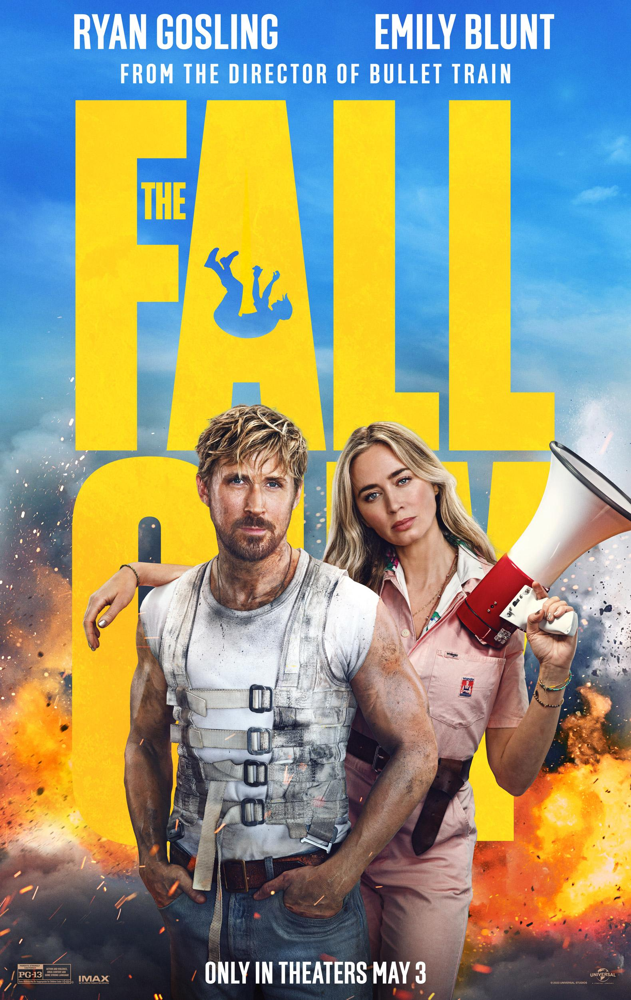
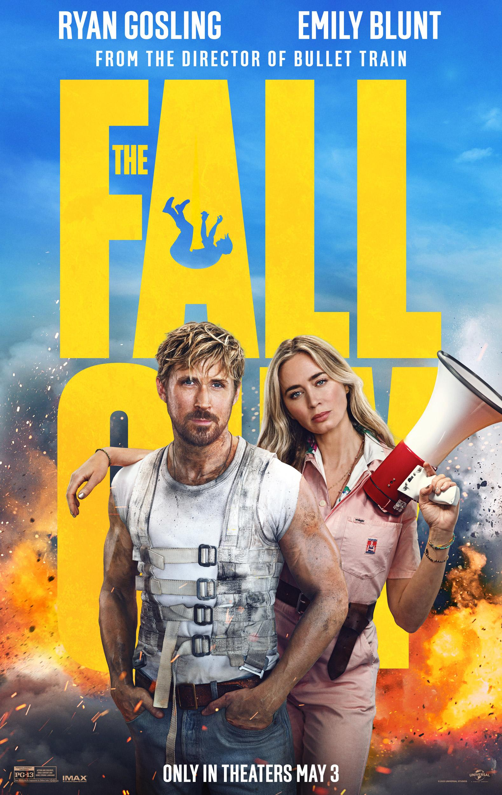

GENRE: Family/Comedy RUNTIME: 1h 48m RATING:
SYNOPSIS
Dreamer Larry Daley thinks he's destined for something big but his imaginative ideas never pay off and in desperate need of a job, he accepts to be a security guard at the Natural History Museum. During his watch, Larry makes a startling discovery. Thanks to the unleashing of an Egyptian curse, the museum's animals spring to life after the building closes. Larry must find a way to save the chaotic situation.

GENRE: Action/Comedy RUNTIME: 1h 48m RATING:
SYNOPSIS
Wade Wilson (Ryan Reynolds) is a former Special Forces operative who now works as a mercenary. His world comes crashing down when evil scientist Ajax (Ed Skrein) tortures, disfigures and transforms him into Deadpool. The rogue experiment leaves Deadpool with accelerated healing powers and a twisted sense of humor. With help from mutant allies Colossus and Negasonic Teenage Warhead (Brianna Hildebrand), Deadpool uses his new skills to hunt down the man who nearly destroyed his life.
GENRE: Comedy/Action RUNTIME: 1h 45m RATING:
SYNOPSIS
One month every year, five highly competitive friends hit the ground running for a no-holds-barred game of tag -- risking their necks, their jobs and their relationships to take one another down. This time, the game coincides with the wedding of the only undefeated player. What should be an easy target soon becomes an all-out war as he knows they're coming to get him.
GENRE: Action/Fantasy RUNTIME: 2h 28m RATING:
SYNOPSIS
With Spider-Man's identity now revealed, our friendly neighborhood web-slinger is unmasked and no longer able to separate his normal life s Peter Parker from the high stakes of being a superhero. When Peter asks for help from Doctor Strange, the stakes become even more dangerous, forcing him to discover what it truly means to be Spider-Man.
GENRE: Action/Comedy RUNTIME: 2h 5m RATING:
SYNOPSIS
After leaving the business one year earlier, battle-scarred stuntman Colt Seavers springs back into action when the star of a big studio movie suddenly disappears. As the mystery surrounding the missing actor deepens, Colt soon finds himself ensnared in a sinister plot that pushes him to the edge of a fall more dangerous than any stunt.